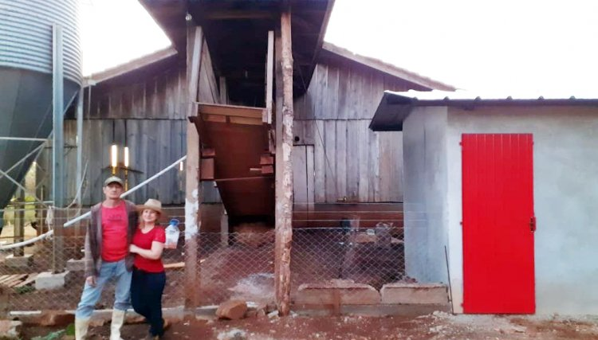
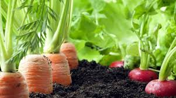

História da familia de Lurdes e Adão
A história da família Cherpinski é marcada pelo trabalho, dedicação e amor pelo campo. Localizada em Cafelândia, a família construiu sua trajetória por meio da agricultura familiar, mantendo viva a tradição de produzir alimentos de qualidade e valorizar o esforço diário no meio rural. Com muito empenho, a família desenvolveu sua leitaria, tornando o leite a base de diversos produtos artesanais feitos com cuidado e carinho. Além da venda de leite fresco, os Cherpinski passaram a produzir requeijão e queijo, conquistando clientes pelo sabor caseiro e pela qualidade dos produtos. Buscando inovar sem perder as raízes da tradição familiar, a família também ampliou sua produção com bombons e geladinhos gourmet, trazendo novas opções para a comunidade e mostrando que a agricultura familiar pode unir criatividade, sabor e empreendedorismo.

História da familia de Cleuza e Marcio
A história de Cleuza e Márcio começou após uma grande mudança na vida da família. Depois da morte do pai de Cleuza, eles deixaram Nova Aurora e se mudaram para a comunidade rural Bela Vista, em Cafelândia, buscando uma nova forma de sustento e uma vida mais ligada ao campo. Com o tempo, o casal começou a cultivar uma pequena horta no sítio, produzindo verduras e legumes para vender a conhecidos e pessoas interessadas em alimentos frescos e caseiros. Mesmo sendo uma produção simples e de pequeno alcance, as vendas já ajudam na renda da família e contribuem para o dia a dia no campo. Além da horta, Cleuza e Márcio também produzem e vendem banha, carne suína, torresmo e ovos caipiras, valorizando alimentos artesanais e feitos de maneira tradicional. Os produtos são vendidos principalmente em Nova Aurora, para pessoas que procuram alimentos mais naturais e com sabor caseiro.
.jpeg)
História de Pai e Filho
A história de Venceslau e Eliezer representa a trajetória de muitas famílias que ajudaram a construir o desenvolvimento rural de Cafelândia. Pai e filho dedicaram grande parte da vida ao trabalho no campo, enfrentando dificuldades desde os primeiros anos em que chegaram à região, quando o município ainda nem existia oficialmente. Naquela época, as terras eram consideradas difíceis para produção, com poucos recursos e muitas limitações. A família chegou em um pequeno caminhão, trazendo apenas o necessário e a esperança de construir uma vida melhor por meio do trabalho rural. Os primeiros anos foram marcados por esforço, adaptação e muita dedicação para transformar a propriedade em um lugar produtivo. Com o passar do tempo, o trabalho da família cresceu. Hoje, Venceslau e Eliezer possuem quatro açudes e um aviário, atividades que ajudam no sustento da família e mostram a evolução conquistada ao longo dos anos.